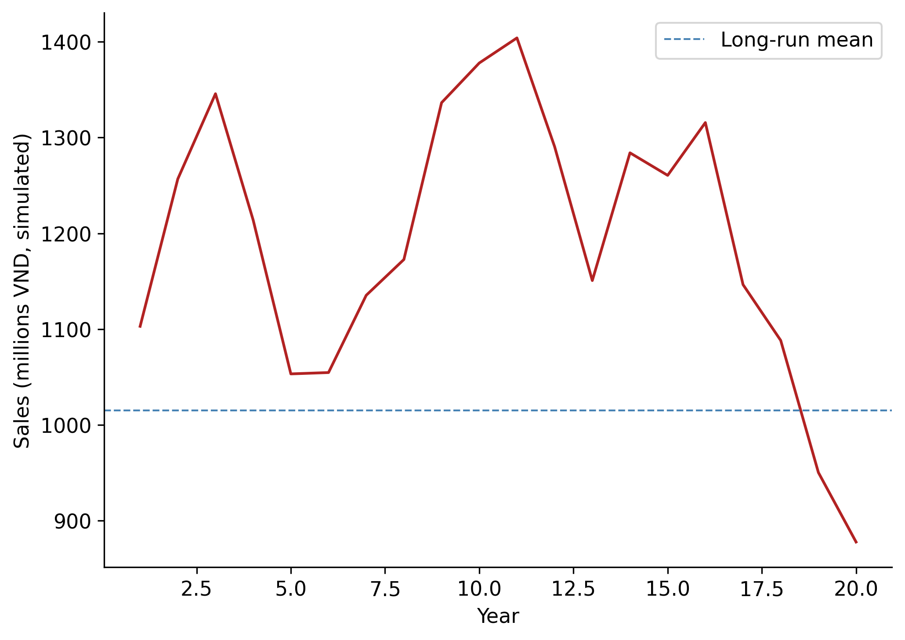
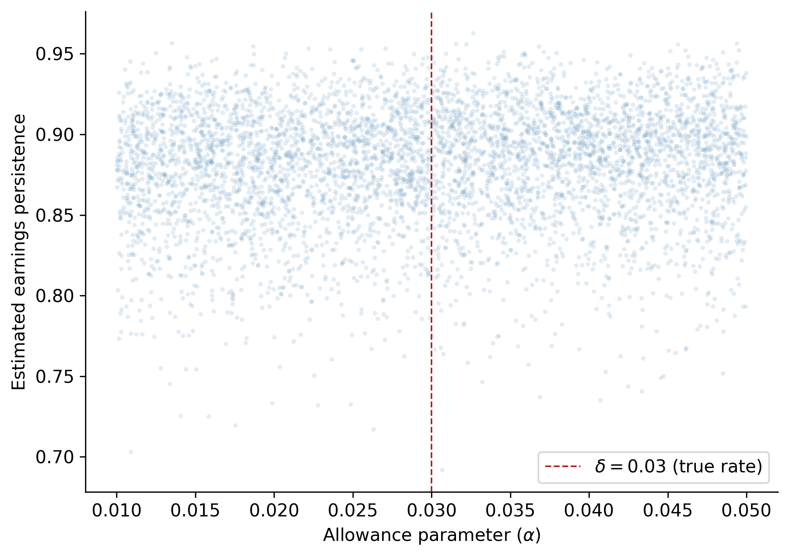

import pandas as pd
import numpy as np
import matplotlib.pyplot as plt
import matplotlib.ticker as mticker
import statsmodels.api as sm
import statsmodels.formula.api as smf
from scipy import stats
from itertools import product
import warnings
warnings.filterwarnings("ignore")
plt.rcParams.update({
"figure.dpi": 150,
"axes.spines.top": False,
"axes.spines.right": False,
"font.size": 11,
})26 Accruals, Earnings Persistence, and Market Efficiency
Accrual accounting is the foundation of modern financial reporting. Under accrual principles, revenues are recognized when earned and expenses when incurred, regardless of when cash changes hands. This timing wedge between economic events and cash realization generates accruals (i.e., the non-cash component of reported earnings). Formally, we define total accruals as:
\[ \text{Accruals}_t = \text{Earnings}_t - \text{Cash Flow from Operations}_t \tag{26.1}\]
The distinction between accruals and cash flows matters because these two components of earnings exhibit markedly different statistical properties. Cash flows from operations tend to be more persistent and harder for managers to manipulate, while accruals are inherently more transient and subject to managerial discretion through estimates, assumptions, and timing choices (Dechow, Ge, and Schrand 2010).
Sloan (1996) demonstrated two important empirical regularities in U.S. data:
- The accrual component of earnings is less persistent than the cash flow component in predicting future earnings, and
- Equity prices behave as if investors fail to distinguish between these components, treating accruals as having the same persistence as cash flows. This second finding implies a predictable pattern in stock returns (i.e., firms with high accruals earn lower subsequent returns, and vice versa—known as the accrual anomaly).
26.0.1 Why Vietnam?
Vietnam’s equity markets provide a compelling laboratory for studying accrual dynamics for several reasons:
Accounting standards in transition. Vietnam operates under Vietnamese Accounting Standards (VAS), which are broadly based on older International Accounting Standards but have not yet fully converged with IFRS. VAS retains certain rules-based provisions that may generate different accrual patterns compared to the principles-based frameworks in developed markets.
State-owned enterprise (SOE) influence. A significant fraction of listed firms on HOSE and HNX are former SOEs or remain partially state-owned. These firms may face different incentives regarding accrual management (political rather than purely economic), introducing heterogeneity absent in the original U.S. studies.
Market maturity and investor sophistication. Vietnam’s stock market, with HOSE established in 2000 and HNX in 2005, is still developing. Retail investors dominate trading volume, and institutional infrastructure (analyst coverage, short-selling constraints, information intermediaries) is less developed than in the U.S. This environment may amplify or attenuate the mispricing patterns documented in developed markets.
Daily price limits. Both HOSE (\(\pm\) 7%) and HNX (\(\pm\) 10%) impose daily price limits, which can impede price discovery and create path dependencies in return measurement that have no analogue in the U.S. context.
Emerging market growth dynamics. High-growth economies generate different accrual profiles—rapid revenue growth mechanically produces large working capital accruals even absent any managerial manipulation (Fairfield, Whisenant, and Yohn 2003).
26.1 Measuring Accruals
26.1.1 The Balance Sheet Approach
The traditional approach to measuring accruals, used in much of the early literature, constructs total accruals from successive balance sheet snapshots. Define the following balance sheet items for firm \(i\) in period \(t\) (Table 26.1).
| Symbol | Description | VAS Equivalent |
|---|---|---|
| \(\Delta CA_{i,t}\) | Change in current assets | Thay đổi tài sản ngắn hạn |
| \(\Delta Cash_{i,t}\) | Change in cash and equivalents | Thay đổi tiền và tương đương tiền |
| \(\Delta CL_{i,t}\) | Change in current liabilities | Thay đổi nợ ngắn hạn |
| \(\Delta STD_{i,t}\) | Change in short-term debt | Thay đổi vay ngắn hạn |
| \(\Delta TP_{i,t}\) | Change in taxes payable | Thay đổi thuế phải nộp |
| \(Dep_{i,t}\) | Depreciation and amortization | Khấu hao TSCĐ |
Total accruals under the balance sheet approach are:
\[ ACC^{BS}_{i,t} = (\Delta CA_{i,t} - \Delta Cash_{i,t}) - (\Delta CL_{i,t} - \Delta STD_{i,t} - \Delta TP_{i,t}) - Dep_{i,t} \tag{26.2}\]
The intuition behind Equation 26.2 is straightforward. Changes in non-cash current assets (such as accounts receivable and inventory) represent revenues recognized or expenses deferred without corresponding cash flows. Changes in operating current liabilities (excluding debt) capture expenses recognized without cash outflows. Short-term debt and taxes payable are excluded because they relate to financing and tax timing rather than operating accruals. Depreciation is subtracted as a non-cash charge against earnings.
All variables are typically scaled by average total assets to control for firm size:
\[ acc_{i,t} = \frac{ACC^{BS}_{i,t}}{(\text{Assets}_{i,t} + \text{Assets}_{i,t-1})/2} \tag{26.3}\]
26.1.2 The Cash Flow Statement Approach
Hribar and Collins (2002) demonstrated that the balance sheet approach introduces measurement error because non-operating events, such as mergers, acquisitions, divestitures, and foreign currency translations, affect current asset and liability balances without corresponding earnings impacts. They advocate a simpler and more accurate approach:
\[ ACC^{CF}_{i,t} = \text{Earnings}_{i,t} - \text{CFO}_{i,t} \tag{26.4}\]
where \(\text{CFO}_{i,t}\) is cash flow from operations reported directly on the cash flow statement.
26.1.3 Vietnamese Context
For Vietnamese listed firms, the cash flow statement approach is generally preferable, but practitioners should be aware of several data considerations:
Circular 200/2014/TT-BTC standardizes the chart of accounts and financial statement templates. Cash flow from operations is reported using the indirect method by most firms (starting from net income and adjusting for non-cash items), though some use the direct method.
VAS 24 (Cash Flow Statements) governs disclosure. Unlike IFRS, VAS treatment of interest paid and dividends received in the operating section is less flexible, potentially affecting comparability.
For the remainder of this chapter, we use the balance sheet approach, where demonstrated on simulated data (for pedagogical transparency) and the cash flow statement approach on actual firm data where available.
26.2 Simulation Analysis
Before turning to Vietnamese market data, we construct a simulation to build economic intuition for why accrual persistence differs from cash flow persistence, and what role estimation error in accrual accounting plays in generating this difference.
26.2.1 The Model
Consider a simplified firm that:
- Sells goods on credit at a constant gross margin \(\mu\)
- Follows an AR(1) sales process: \(S_t = \bar{S} + \rho(S_{t-1} - \bar{S}) + \varepsilon_t\), where \(\varepsilon_t \sim N(0, \sigma^2_S)\)
- Collects receivables in the following period, with a true default rate \(\delta\)
- Records an allowance for doubtful debts as a fraction \(\alpha\) of current sales
- Pays dividends equal to 100% of net income
The key parameter of interest is \(\alpha\), the managerial estimate of bad debts. When \(\alpha = \delta\) (the true default rate), the accounting system is unbiased. When \(\alpha \neq \delta\), accruals contain estimation error that affects persistence.
def simulate_firm(
alpha: float = 0.03,
n_years: int = 20,
delta: float = 0.03,
gross_margin: float = 0.80,
mean_sales: float = 1000.0,
sd_sales: float = 100.0,
rho: float = 0.9,
beg_cash: float = 1500.0,
rng: np.random.Generator = None,
) -> pd.DataFrame:
"""
Simulate financial statements for a single firm.
Parameters
----------
alpha : float
Managerial estimate of doubtful debt rate (allowance parameter).
n_years : int
Number of years to simulate.
delta : float
True economic default rate on receivables.
gross_margin : float
Gross margin on sales.
mean_sales : float
Long-run mean of the AR(1) sales process.
sd_sales : float
Standard deviation of the sales innovation.
rho : float
AR(1) persistence parameter for sales.
beg_cash : float
Beginning cash balance.
rng : numpy Generator
Random number generator for reproducibility.
Returns
-------
pd.DataFrame
Simulated financial statement data.
"""
if rng is None:
rng = np.random.default_rng(42)
# Generate AR(1) sales
errors = rng.normal(0, sd_sales, n_years)
sales = np.zeros(n_years)
sales[0] = mean_sales + errors[0]
for t in range(1, n_years):
sales[t] = mean_sales + rho * (sales[t - 1] - mean_sales) + errors[t]
# Allocate arrays
cogs = (1 - gross_margin) * sales
ar = sales.copy() # all sales on credit
allowance = alpha * sales # allowance for doubtful debts
writeoffs = np.zeros(n_years)
collections = np.zeros(n_years)
bad_debt_exp = np.zeros(n_years)
net_income = np.zeros(n_years)
dividends = np.zeros(n_years)
cash = np.zeros(n_years)
equity = np.zeros(n_years)
# Year 1
bad_debt_exp[0] = allowance[0]
net_income[0] = sales[0] - cogs[0] - bad_debt_exp[0]
dividends[0] = net_income[0]
cash[0] = beg_cash + collections[0] - cogs[0] - dividends[0]
equity[0] = beg_cash + net_income[0] - dividends[0]
# Years 2 through n_years
for t in range(1, n_years):
writeoffs[t] = delta * ar[t - 1]
collections[t] = (1 - delta) * ar[t - 1]
bad_debt_exp[t] = allowance[t] - allowance[t - 1] + writeoffs[t]
net_income[t] = sales[t] - cogs[t] - bad_debt_exp[t]
dividends[t] = net_income[t]
cash[t] = cash[t - 1] + collections[t] - cogs[t] - dividends[t]
equity[t] = equity[t - 1] + net_income[t] - dividends[t]
return pd.DataFrame({
"year": np.arange(1, n_years + 1),
"alpha": alpha,
"sales": sales,
"cogs": cogs,
"ar": ar,
"allowance": allowance,
"writeoffs": writeoffs,
"collections": collections,
"bad_debt_exp": bad_debt_exp,
"net_income": net_income,
"dividends": dividends,
"cash": cash,
"equity": equity,
})26.2.2 Generating a Single Firm
We first generate 1,000 years of data for a single firm with \(\alpha = \delta = 0.03\) (unbiased accounting) to visualize the sales process.
rng = np.random.default_rng(2024)
df_long = simulate_firm(alpha=0.03, n_years=1000, rng=rng)
fig, ax = plt.subplots()
subset = df_long.query("year <= 20")
ax.plot(subset["year"], subset["sales"], color="firebrick", linewidth=1.5)
ax.axhline(
df_long["sales"].mean(), color="steelblue",
linestyle="--", linewidth=1, label="Long-run mean"
)
ax.set_xlabel("Year")
ax.set_ylabel("Sales (millions VND, simulated)")
ax.legend()
plt.tight_layout()
plt.show()

26.2.3 Cross-Sectional Simulation: Persistence and Estimation Error
The central economic insight is that when the managerial estimate \(\alpha\) departs from the true rate \(\delta\), accruals contain a systematic estimation error that reduces the persistence of earnings. To demonstrate this, we simulate 5,000 firms, each with a randomly drawn \(\alpha \in [0.01, 0.05]\) while keeping the true default rate fixed at \(\delta = 0.03\).
For each firm, we estimate earnings persistence as the slope coefficient \(\hat{\beta}_1\) from an AR(1) regression of net income:
\[ NI_{i,t} = \beta_0 + \beta_1 NI_{i,t-1} + u_{i,t} \tag{26.5}\]
def estimate_persistence(df: pd.DataFrame) -> dict:
"""Estimate AR(1) persistence of net income for one firm."""
temp = df[["year", "net_income"]].copy()
temp["lag_ni"] = temp["net_income"].shift(1)
temp = temp.dropna()
if len(temp) < 10:
return {"alpha": df["alpha"].iloc[0], "persistence": np.nan}
X = sm.add_constant(temp["lag_ni"])
model = sm.OLS(temp["net_income"], X).fit()
return {"alpha": df["alpha"].iloc[0], "persistence": model.params["lag_ni"]}
n_firms = 5000
rng_main = np.random.default_rng(2024)
alphas = rng_main.uniform(0.01, 0.05, n_firms)
results = []
for i, a in enumerate(alphas):
firm_rng = np.random.default_rng(2024 + i)
firm_df = simulate_firm(alpha=a, n_years=200, rng=firm_rng)
results.append(estimate_persistence(firm_df))
sim_results = pd.DataFrame(results)fig, ax = plt.subplots()
ax.scatter(
sim_results["alpha"], sim_results["persistence"],
alpha=0.15, s=8, color="steelblue", edgecolors="none"
)
ax.set_xlabel(r"Allowance parameter ($\alpha$)")
ax.set_ylabel("Estimated earnings persistence")
ax.axvline(0.03, color="firebrick", linestyle="--", linewidth=1, label=r"$\delta = 0.03$ (true rate)")
ax.legend()
plt.tight_layout()
plt.show()

26.2.4 Decomposing Persistence by Earnings Component
The simulation allows us to verify the core theoretical prediction: cash flow persistence exceeds accrual persistence. We compute operating cash flows and accruals for each simulated firm and estimate component-specific persistence.
def component_persistence(df: pd.DataFrame) -> dict:
"""Estimate persistence of NI, CFO, and accruals."""
temp = df.copy()
# CFO = collections - COGS (direct method, simplified)
temp["cfo"] = temp["collections"] - temp["cogs"]
temp["acc"] = temp["net_income"] - temp["cfo"]
out = {"alpha": temp["alpha"].iloc[0]}
for var in ["net_income", "cfo", "acc"]:
t = temp[["year", var]].copy()
t["lag"] = t[var].shift(1)
t = t.dropna()
if len(t) < 10:
out[f"persist_{var}"] = np.nan
continue
X = sm.add_constant(t["lag"])
model = sm.OLS(t[var], X).fit()
out[f"persist_{var}"] = model.params["lag"]
return out
# Run for a subset at alpha = 0.03 (unbiased) and alpha = 0.05 (biased)
component_results = []
for a_val in [0.01, 0.02, 0.03, 0.04, 0.05]:
for seed_offset in range(500):
frng = np.random.default_rng(10000 + seed_offset)
fdf = simulate_firm(alpha=a_val, n_years=200, rng=frng)
component_results.append(component_persistence(fdf))
comp_df = pd.DataFrame(component_results)summary = (
comp_df
.groupby("alpha")[["persist_net_income", "persist_cfo", "persist_acc"]]
.mean()
.round(4)
.rename(columns={
"persist_net_income": "Earnings",
"persist_cfo": "Cash Flows",
"persist_acc": "Accruals",
})
)
summary.index.name = "α"
summary| Earnings | Cash Flows | Accruals | |
|---|---|---|---|
| α | |||
| 0.01 | 0.8728 | 0.6922 | -0.0357 |
| 0.02 | 0.8758 | 0.6922 | -0.0357 |
| 0.03 | 0.8788 | 0.6922 | -0.0357 |
| 0.04 | 0.8818 | 0.6922 | -0.0357 |
| 0.05 | 0.8846 | 0.6922 | -0.0357 |
The simulation confirms a key insight: cash flow persistence is largely invariant to the quality of accrual estimation, whereas accrual persistence, and consequently total earnings persistence, degrades when managerial estimates deviate from economic truth. This provides a structural explanation for the empirical regularity documented in Sloan (1996): accruals are less persistent because they embed estimation error that mean-reverts as the accounting system self-corrects over time.
NoteVietnamese Interpretation
In the Vietnamese context, this mechanism is amplified by several institutional factors. VAS provisions for doubtful debts (Circular 228/2009/TT-BTC, updated by Circular 48/2019/TT-BTC) prescribe specific aging-based percentages rather than allowing full managerial discretion. While this rules-based approach reduces some forms of manipulation, it can increase estimation error when the prescribed rates diverge from firm-specific default experiences, particularly relevant for firms in rapidly changing sectors like real estate development or export manufacturing.
26.3 Earnings Persistence in Vietnamese Data
We now turn to empirical analysis using Vietnamese listed firm data. The data requirements are:
- Annual financial statements for firms listed on HOSE and HNX
- Stock return data: Monthly adjusted closing prices for return computation
- Industry classifications: VSIC (Vietnam Standard Industrial Classification) codes
26.3.1 Data Preparation
The following code constructs the accrual measures from Vietnamese firm financial statements. We demonstrate the workflow assuming data is loaded from a local database or CSV files. Adapt the data loading step to match your source.
# ─── Data Loading (adapt to your source) ───────────────────────────
# funda = pd.read_parquet("data/vn_annual_financials.parquet")
# prices = pd.read_parquet("data/vn_monthly_prices.parquet")
# ─── Variable Construction ──────────────────────────────────────────
def construct_accruals(funda: pd.DataFrame) -> pd.DataFrame:
"""
Construct accrual measures from Vietnamese annual financial data.
Expected columns (VAS-aligned):
ticker, year, datadate,
act (current assets), lct (current liabilities),
che (cash & equivalents), dlc (short-term borrowings),
txp (taxes payable), dp (depreciation & amortization),
oiadp (operating income after depreciation),
at (total assets), cfo (cash flow from operations),
exchange (HOSE=1, HNX=2), vsic2 (2-digit industry code)
"""
df = funda.sort_values(["ticker", "year"]).copy()
# Fill missing with zero where economically appropriate
for col in ["che", "dlc", "txp"]:
df[col] = df[col].fillna(0)
# Lagged total assets and average total assets
df["lag_at"] = df.groupby("ticker")["at"].shift(1)
df["avg_at"] = (df["at"] + df["lag_at"]) / 2
# Balance sheet approach to accruals
for col in ["act", "che", "lct", "dlc", "txp"]:
df[f"d_{col}"] = df.groupby("ticker")[col].diff()
df["acc_bs"] = (
(df["d_act"] - df["d_che"])
- (df["d_lct"] - df["d_dlc"] - df["d_txp"])
- df["dp"]
)
# Scaled variables
df["earn"] = df["oiadp"] / df["avg_at"]
df["acc"] = df["acc_bs"] / df["avg_at"]
df["cfo"] = df["earn"] - df["acc"]
# If CFO from cash flow statement is available, prefer it
if "cfo_stmt" in df.columns:
df["cfo_direct"] = df["cfo_stmt"] / df["avg_at"]
df["acc_cf"] = df["earn"] - df["cfo_direct"]
# Lead earnings (next year)
df["lead_earn"] = df.groupby("ticker")["earn"].shift(-1)
# Decile ranks (within each year for cross-sectional analysis)
for var in ["acc", "earn", "cfo"]:
df[f"{var}_decile"] = (
df.groupby("year")[var]
.transform(lambda x: pd.qcut(x, 10, labels=False, duplicates="drop") + 1)
)
df["lead_earn_decile"] = (
df.groupby("year")["lead_earn"]
.transform(lambda x: pd.qcut(x, 10, labels=False, duplicates="drop") + 1)
)
# Filter
df = df.query("avg_at > 0").dropna(subset=["acc", "earn", "cfo", "lead_earn"])
return df26.3.2 Simulated Vietnamese-Style Data for Demonstration
Since we cannot distribute proprietary data in this chapter, we generate synthetic data that mimics the cross-sectional properties of Vietnamese listed firms. The parameters are calibrated to approximate values observed in the Vietnamese market.
def generate_vn_panel(
n_firms: int = 400,
n_years: int = 15,
seed: int = 2024,
) -> pd.DataFrame:
"""
Generate a synthetic panel dataset with properties resembling
Vietnamese listed firms for demonstration purposes.
"""
rng = np.random.default_rng(seed)
records = []
for i in range(n_firms):
# Firm-specific parameters
mean_earn = rng.normal(0.08, 0.04) # mean ROA ~8%
persist = rng.uniform(0.3, 0.85) # earnings persistence
acc_share = rng.normal(0.0, 0.03) # mean accrual level
acc_noise = rng.uniform(0.02, 0.06) # accrual volatility
# SOE indicator (≈30% of Vietnamese listed firms)
is_soe = int(rng.random() < 0.30)
# Exchange: HOSE (1) vs HNX (2)
exchange = 1 if rng.random() < 0.6 else 2
# VSIC 2-digit code
vsic2 = rng.choice([10, 20, 25, 41, 46, 47, 52, 62, 64, 68])
earn_t = mean_earn
for t in range(n_years):
year = 2009 + t
shock = rng.normal(0, 0.04)
earn_t = mean_earn + persist * (earn_t - mean_earn) + shock
# Accruals: base + firm-specific noise
# SOEs tend to have slightly smoother accruals
soe_adj = -0.005 if is_soe else 0.0
acc_t = acc_share + soe_adj + rng.normal(0, acc_noise)
cfo_t = earn_t - acc_t
records.append({
"ticker": f"VN{i:04d}",
"year": year,
"earn": earn_t,
"acc": acc_t,
"cfo": cfo_t,
"is_soe": is_soe,
"exchange": exchange,
"vsic2": vsic2,
})
df = pd.DataFrame(records)
# Lead earnings
df = df.sort_values(["ticker", "year"])
df["lead_earn"] = df.groupby("ticker")["earn"].shift(-1)
# Decile ranks within year
for var in ["acc", "earn", "cfo"]:
df[f"{var}_decile"] = (
df.groupby("year")[var]
.transform(lambda x: pd.qcut(
x, 10, labels=False, duplicates="drop"
) + 1)
)
df["lead_earn_decile"] = (
df.groupby("year")["lead_earn"]
.transform(lambda x: pd.qcut(
x, 10, labels=False, duplicates="drop"
) + 1)
)
# Simulate size-adjusted returns
# Returns load on contemporaneous earnings surprise and lagged mispricing
df["size_adj_ret"] = (
1.5 * (df["lead_earn"] - df["earn"]) # earnings surprise
- 0.25 * df["acc"] # accrual mispricing
+ rng.normal(0, 0.30, len(df)) # noise
)
df = df.dropna(subset=["lead_earn", "size_adj_ret"])
return df
panel = generate_vn_panel(n_firms=500, n_years=15, seed=2024)
print(f"Panel: {panel.shape[0]:,} firm-years, "
f"{panel['ticker'].nunique()} firms, "
f"{panel['year'].nunique()} years")Panel: 7,000 firm-years, 500 firms, 14 years26.3.3 Descriptive Statistics by Accrual Decile
Table 26.3 reports mean values of earnings, accruals, and cash flows by accrual decile. The pattern should mirror the mechanical decomposition: \(\text{earn} = \text{acc} + \text{cfo}\).
desc = (
panel
.groupby("acc_decile")[["acc", "earn", "cfo"]]
.mean()
.round(4)
)
desc.index.name = "Accrual Decile"
desc.columns = ["Accruals", "Earnings", "Cash Flows"]
desc| Accruals | Earnings | Cash Flows | |
|---|---|---|---|
| Accrual Decile | |||
| 1 | -0.0898 | 0.0760 | 0.1657 |
| 2 | -0.0509 | 0.0814 | 0.1324 |
| 3 | -0.0321 | 0.0769 | 0.1090 |
| 4 | -0.0180 | 0.0800 | 0.0980 |
| 5 | -0.0057 | 0.0792 | 0.0849 |
| 6 | 0.0071 | 0.0776 | 0.0705 |
| 7 | 0.0193 | 0.0814 | 0.0621 |
| 8 | 0.0334 | 0.0760 | 0.0425 |
| 9 | 0.0521 | 0.0760 | 0.0239 |
| 10 | 0.0896 | 0.0780 | -0.0116 |
26.3.4 Persistence Regressions
We estimate the pooled persistence regression analogous to Table 2 of Sloan (1996). The baseline specification is:
\[ \text{Earnings}_{i,t+1} = \gamma_0 + \gamma_1 \text{Earnings}_{i,t} + \epsilon_{i,t} \tag{26.6}\]
followed by the decomposition:
\[ \text{Earnings}_{i,t+1} = \gamma_0 + \gamma_a \text{Accruals}_{i,t} + \gamma_c \text{CFO}_{i,t} + \epsilon_{i,t} \tag{26.7}\]
The hypothesis of differential persistence is \(H_0: \gamma_a = \gamma_c\), which we test with a standard \(F\)-test.
# Column (1): Aggregate persistence
mod1 = smf.ols("lead_earn ~ earn", data=panel).fit()
# Column (2): Component persistence
mod2 = smf.ols("lead_earn ~ acc + cfo", data=panel).fit()
# F-test for H0: coef(acc) = coef(cfo)
f_test = mod2.f_test("acc = cfo")
results_table = pd.DataFrame({
"(1) Aggregate": {
"Intercept": f"{mod1.params['Intercept']:.4f} ({mod1.bse['Intercept']:.4f})",
"Earnings": f"{mod1.params['earn']:.4f} ({mod1.bse['earn']:.4f})",
"Accruals": "",
"Cash Flows": "",
"N": f"{int(mod1.nobs):,}",
"R²": f"{mod1.rsquared:.3f}",
"F-test (acc=cfo)": "",
},
"(2) Components": {
"Intercept": f"{mod2.params['Intercept']:.4f} ({mod2.bse['Intercept']:.4f})",
"Earnings": "",
"Accruals": f"{mod2.params['acc']:.4f} ({mod2.bse['acc']:.4f})",
"Cash Flows": f"{mod2.params['cfo']:.4f} ({mod2.bse['cfo']:.4f})",
"N": f"{int(mod2.nobs):,}",
"R²": f"{mod2.rsquared:.3f}",
"F-test (acc=cfo)": f"F = {float(f_test.fvalue):.2f}, p = {float(f_test.pvalue):.4f}",
},
})
results_table| (1) Aggregate | (2) Components | |
|---|---|---|
| Intercept | 0.0189 (0.0008) | 0.0189 (0.0008) |
| Earnings | 0.7618 (0.0079) | |
| Accruals | 0.7602 (0.0127) | |
| Cash Flows | 0.7618 (0.0079) | |
| N | 7,000 | 7,000 |
| R² | 0.569 | 0.569 |
| F-test (acc=cfo) | F = 0.02, p = 0.8746 |
26.3.5 Industry-Level Persistence
Market-wide regressions may mask heterogeneity across industries. Vietnamese industry structure is concentrated in manufacturing, real estate, banking, and retail (i.e., sectors with very different accrual profiles). We estimate persistence separately by two-digit VSIC code.
def industry_persistence(df: pd.DataFrame) -> pd.DataFrame:
"""Estimate persistence regressions by VSIC 2-digit code."""
coefs = []
for vsic, group in df.groupby("vsic2"):
if len(group) < 30:
continue
try:
mod = smf.ols("lead_earn ~ acc + cfo", data=group).fit()
coefs.append({
"vsic2": vsic,
"intercept": mod.params["Intercept"],
"acc": mod.params["acc"],
"cfo": mod.params["cfo"],
})
except Exception:
continue
return pd.DataFrame(coefs)
ind_coefs = industry_persistence(panel)
ind_summary = ind_coefs[["intercept", "acc", "cfo"]].describe().loc[
["mean", "25%", "50%", "75%"]
].round(4)
ind_summary.index = ["Mean", "Q1", "Median", "Q3"]
ind_summary.columns = ["Intercept", "Accruals (γ_a)", "Cash Flows (γ_c)"]
ind_summary| Intercept | Accruals (γ_a) | Cash Flows (γ_c) | |
|---|---|---|---|
| Mean | 0.0192 | 0.7573 | 0.7587 |
| Q1 | 0.0171 | 0.7310 | 0.7323 |
| Median | 0.0193 | 0.7621 | 0.7558 |
| Q3 | 0.0213 | 0.7914 | 0.7750 |
26.3.6 Persistence Visualization
Figure 26.3 compares the accrual and cash flow persistence coefficients across industries, providing a visual test of the differential persistence hypothesis.
if len(ind_coefs) > 2:
ind_plot = ind_coefs.sort_values("cfo").reset_index(drop=True)
fig, ax = plt.subplots(figsize=(8, 5))
x = np.arange(len(ind_plot))
width = 0.35
ax.barh(x - width / 2, ind_plot["acc"], width, label="Accruals", color="steelblue")
ax.barh(x + width / 2, ind_plot["cfo"], width, label="Cash Flows", color="firebrick")
ax.set_yticks(x)
ax.set_yticklabels([f"VSIC {int(v)}" for v in ind_plot["vsic2"]])
ax.set_xlabel("Persistence Coefficient")
ax.legend()
ax.set_title("Earnings Component Persistence by Industry")
plt.tight_layout()
plt.show()
26.4 Market Pricing of Earnings Components
The persistence analysis establishes that accruals are less persistent than cash flows. The market efficiency question is whether stock prices reflect this difference. If investors naïvely treat both components as equally persistent, what Sloan (1996) termed “earnings fixation,” then a predictable component of future returns should be related to the accrual composition of current earnings.
26.4.1 Theoretical Framework
Suppose the market prices earnings using:
\[ P_t = \frac{1}{r} \left[ \hat{\gamma}^* \cdot E_t \right] \tag{26.8}\]
where \(\hat{\gamma}^*\) is the market’s perceived persistence of aggregate earnings. Rational pricing requires:
\[ P_t = \frac{1}{r} \left[ \hat{\gamma}_a \cdot ACC_t + \hat{\gamma}_c \cdot CFO_t \right] \tag{26.9}\]
with \(\hat{\gamma}_a < \hat{\gamma}_c\). If the market uses Equation 26.8 instead of Equation 26.9, then high-accrual firms are overpriced (because the market overestimates the persistence of their accrual-heavy earnings) and low-accrual firms are underpriced.
26.4.2 The Abel–Mishkin Test
Testing whether market pricing coefficients match rational forecasting coefficients can be done via the approach of Abel (1983), which avoids the complexity of the full Abel and Mishkin (1983), Mishkin (1983) and Mishkin (2007) nonlinear system. The intuition is simple: if lagged earnings components are mispriced, this should be detectable in a regression of future abnormal returns on those components:
\[ AR_{i,t+1} = \alpha + \beta_a \cdot ACC_{i,t} + \beta_c \cdot CFO_{i,t} + \eta_{i,t} \tag{26.10}\]
Under efficient pricing, \(\beta_a = \beta_c = 0\): lagged public information should have no predictive power for abnormal returns. A finding of \(\beta_a < 0\) implies that the market overprices accruals and subsequently corrects.
# Abel-Mishkin style test
mod_am1 = smf.ols("size_adj_ret ~ acc + cfo", data=panel).fit()
mod_am2 = smf.ols("size_adj_ret ~ acc_decile + cfo_decile", data=panel).fit()
am_table = pd.DataFrame({
"(1) Continuous": {
"Intercept": f"{mod_am1.params['Intercept']:.4f} ({mod_am1.bse['Intercept']:.4f})",
"Accruals": f"{mod_am1.params['acc']:.4f} ({mod_am1.bse['acc']:.4f})",
"Cash Flows": f"{mod_am1.params['cfo']:.4f} ({mod_am1.bse['cfo']:.4f})",
"N": f"{int(mod_am1.nobs):,}",
"R²": f"{mod_am1.rsquared:.4f}",
},
"(2) Decile Ranks": {
"Intercept": f"{mod_am2.params['Intercept']:.4f} ({mod_am2.bse['Intercept']:.4f})",
"Accruals": f"{mod_am2.params['acc_decile']:.4f} ({mod_am2.bse['acc_decile']:.4f})",
"Cash Flows": f"{mod_am2.params['cfo_decile']:.4f} ({mod_am2.bse['cfo_decile']:.4f})",
"N": f"{int(mod_am2.nobs):,}",
"R²": f"{mod_am2.rsquared:.4f}",
},
})
am_table| (1) Continuous | (2) Decile Ranks | |
|---|---|---|
| Intercept | 0.0263 (0.0058) | 0.0962 (0.0161) |
| Accruals | -0.5686 (0.0920) | -0.0091 (0.0016) |
| Cash Flows | -0.3538 (0.0575) | -0.0087 (0.0016) |
| N | 7,000 | 7,000 |
| R² | 0.0067 | 0.0055 |
26.4.3 Interpretation for Vietnam
The limited attention hypothesis of Hirshleifer and Teoh (2003) provides a particularly appealing explanation for Vietnamese markets. When retail investors dominate trading, as in Vietnam, where retail participation exceeds 80% of daily turnover, information processing capacity is limited. Investors may anchor on headline earnings without decomposing into accrual and cash flow components. The absence of short-selling mechanisms (Vietnam did not introduce covered short selling until 2024) further impedes the correction of overpricing, potentially allowing the accrual anomaly to persist longer than in developed markets.
26.5 The Accrual Anomaly
26.5.1 Portfolio Returns by Accrual Decile
Following the portfolio approach of Sloan (1996), we compute mean size-adjusted returns for each accrual decile. If the market misprices accruals, we expect a monotonically decreasing pattern: low-accrual firms (decile 1) earn positive abnormal returns, while high-accrual firms (decile 10) earn negative abnormal returns.
# Compute annual portfolio returns (equal-weighted within decile-year)
port_rets = (
panel
.groupby(["year", "acc_decile"])["size_adj_ret"]
.mean()
.reset_index()
)
# Regression approach: decile dummies (no intercept)
port_rets["acc_decile_str"] = "D" + port_rets["acc_decile"].astype(str).str.zfill(2)
mod_port = smf.ols(
"size_adj_ret ~ C(acc_decile, Treatment(reference=0)) - 1",
data=port_rets.assign(acc_decile=port_rets["acc_decile"].astype("category")),
).fit()
# Mean returns by decile
decile_means = (
port_rets
.groupby("acc_decile")["size_adj_ret"]
.agg(["mean", "std", "count"])
.round(4)
)
decile_means["t_stat"] = (
decile_means["mean"] / (decile_means["std"] / np.sqrt(decile_means["count"]))
).round(2)
decile_means.columns = ["Mean Return", "Std Dev", "N Years", "t-stat"]
# Hedge portfolio
hedge_series = (
port_rets.query("acc_decile == 1").set_index("year")["size_adj_ret"]
- port_rets.query("acc_decile == 10").set_index("year")["size_adj_ret"]
)
hedge_mean = hedge_series.mean()
hedge_t = hedge_mean / (hedge_series.std() / np.sqrt(len(hedge_series)))
print(f"Hedge portfolio (D1 - D10): {hedge_mean:.4f}")
print(f"t-statistic: {hedge_t:.2f}")
print()
decile_meansHedge portfolio (D1 - D10): 0.0397
t-statistic: 2.21
| Mean Return | Std Dev | N Years | t-stat | |
|---|---|---|---|---|
| acc_decile | ||||
| 1 | 0.0242 | 0.0471 | 14 | 1.92 |
| 2 | 0.0135 | 0.0370 | 14 | 1.37 |
| 3 | -0.0008 | 0.0596 | 14 | -0.05 |
| 4 | -0.0111 | 0.0317 | 14 | -1.31 |
| 5 | 0.0034 | 0.0337 | 14 | 0.38 |
| 6 | 0.0086 | 0.0422 | 14 | 0.76 |
| 7 | -0.0097 | 0.0318 | 14 | -1.14 |
| 8 | 0.0005 | 0.0580 | 14 | 0.03 |
| 9 | -0.0280 | 0.0337 | 14 | -3.11 |
| 10 | -0.0155 | 0.0354 | 14 | -1.64 |
26.5.2 Visualizing the Anomaly
decile_plot = port_rets.groupby("acc_decile")["size_adj_ret"].mean()
fig, ax = plt.subplots()
colors = ["steelblue" if r > 0 else "firebrick" for r in decile_plot.values]
ax.bar(decile_plot.index, decile_plot.values, color=colors, edgecolor="white")
ax.axhline(0, color="black", linewidth=0.5)
ax.set_xlabel("Accrual Decile")
ax.set_ylabel("Mean Size-Adjusted Return")
ax.set_xticks(range(1, 11))
ax.yaxis.set_major_formatter(mticker.PercentFormatter(xmax=1, decimals=1))
plt.tight_layout()
plt.show()
26.5.3 Time-Series Stability
A critical question for any anomaly is whether it persists over time or is concentrated in specific sub-periods. Figure 26.5 plots the hedge portfolio return by year.
fig, ax = plt.subplots()
ax.bar(hedge_series.index, hedge_series.values,
color=["steelblue" if v > 0 else "firebrick" for v in hedge_series.values],
edgecolor="white")
ax.axhline(hedge_series.mean(), color="black", linestyle="--", linewidth=1,
label=f"Mean = {hedge_series.mean():.1%}")
ax.axhline(0, color="black", linewidth=0.5)
ax.set_xlabel("Year")
ax.set_ylabel("Hedge Portfolio Return")
ax.yaxis.set_major_formatter(mticker.PercentFormatter(xmax=1, decimals=0))
ax.legend()
plt.tight_layout()
plt.show()
26.6 Discussion and Contemporary Perspectives
26.6.1 Alternative Explanations
The accrual anomaly has generated an extensive debate in the accounting and finance literature. Several alternative explanations merit consideration in the Vietnamese context:
Risk-based explanations. Khan (2008) argues that high-accrual firms may earn lower returns because they are less risky, not because they are mispriced. If the CAPM or multi-factor models fail to capture the true risk structure, what appears as an anomaly may simply be compensation for omitted risk factors. This explanation is harder to evaluate in Vietnam given the limited history of factor models calibrated to local data.
Growth and investment. Fairfield, Whisenant, and Yohn (2003) show that the low persistence of accruals extends to long-term accruals (capital expenditures), suggesting that the phenomenon reflects diminishing marginal returns to investment rather than earnings manipulation. In Vietnam’s high-growth environment, this channel may be particularly important as firms invest aggressively during credit booms.
Data artifacts. Kraft, Leone, and Wasley (2006) identify sensitivity to outliers and look-ahead bias in the original evidence. Vietnamese financial data, with its shorter history and higher incidence of reporting errors, warrants extra vigilance on these points.
Institutional constraints. Short-selling restrictions, prevalent in Vietnam until recently, prevent arbitrageurs from correcting overpricing. Combined with high transaction costs and limited institutional investor participation, this creates an environment where mispricing can be sustained even if sophisticated investors identify it.
26.6.2 State-Owned Enterprises and Accrual Quality
A distinctive feature of Vietnamese markets is the prevalence of SOEs and former SOEs. Several testable hypotheses arise:
Political smoothing: SOE managers may smooth earnings to meet government targets, generating accruals that differ in nature from those of private firms.
Audit quality: Khanh and Nguyen (2018) find that audit quality varies systematically with ownership structure in Vietnam. Lower audit quality may allow greater accrual manipulation.
Information environment: SOEs may have weaker voluntary disclosure, increasing the information asymmetry between accruals and cash flows.
These hypotheses suggest that the accrual anomaly may exhibit cross-sectional variation along ownership dimensions unique to Vietnam.
26.6.3 Methodological Considerations
When implementing this analysis with actual Vietnamese data, several practical issues require attention:
Standard errors. Pooled OLS standard errors assume independence across firm-years. In practice, both cross-sectional correlation (common shocks within a year) and time-series correlation (firm-level persistence) are present. Clustering standard errors by firm and year (two-way clustering) or using the Fama-MacBeth procedure (Fama and MacBeth 1973) with Newey-West corrections is recommended.
VAS-specific items. Vietnamese financial statements include items without direct equivalents in Compustat, such as chi phí trả trước (prepaid expenses reported separately from current assets in some VAS templates). Researchers must map these carefully.
Price limits. Daily price limits on HOSE (\(\pm\) 7%) and HNX (\(\pm\) 10%) can truncate return distributions and create serial correlation in measured returns. For return measurement over 12-month windows, this is less problematic but should be documented.
Exchange effects. HOSE-listed firms tend to be larger and more liquid than HNX-listed firms. Separate analysis by exchange, or inclusion of exchange fixed effects, can help ensure results are not driven by liquidity differences.
26.7 Summary
This chapter examined accrual accounting and its implications for earnings persistence and market efficiency in the Vietnamese context. The key findings are:
- Accruals are the portion of earnings not backed by contemporaneous cash flows. They arise naturally from accrual accounting but also embed estimation errors and managerial discretion.
- Simulation analysis demonstrates that when accounting estimates deviate from economic truth, accrual persistence falls below cash flow persistence—providing a structural explanation for the empirical regularity.
- Persistence regressions confirm that the accrual component of earnings is less persistent than the cash flow component, a finding that holds across industries.
- Market pricing tests suggest that stock prices in Vietnamese markets may not fully incorporate the differential persistence of earnings components, giving rise to the accrual anomaly.
The Vietnamese institutional environment provides rich variation for future research on the interplay between accounting quality, investor sophistication, and market efficiency.